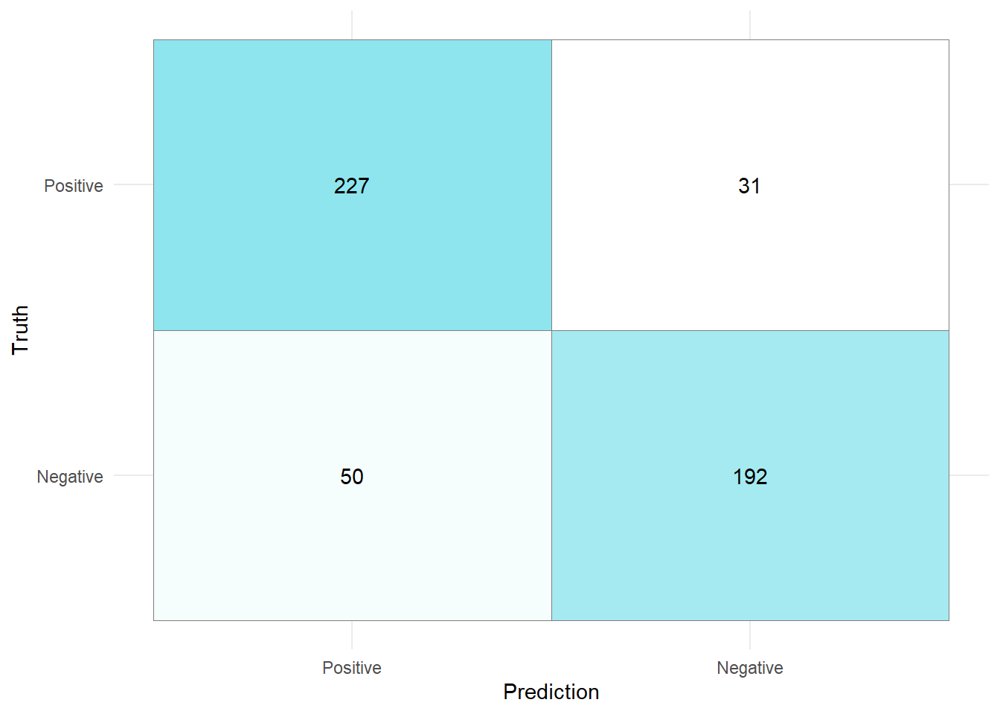

In this exercise session, we will consider multiple advanced machine learning models. Our base model will not be a penalized logistic regression as in Session 05 rather than a random forest. The models we are considering subsequently, are also widely used in application as their performance on classification tasks is superb! However, similar to random forests, their explainability is still subpar compared to a simple logistic regression or classification tree. Before we learn how to train and finetune these models, we will discuss some theoretical aspects.
6.1.1 Confusion matrices in R
Since we will be working with on a classification task in the exercises, being able to construct a confusion matrix is crucial.
Consider the following example data set which is part of the {yardstick} library:
Truth
Prediction Positive Negative
Positive 227 50
Negative 31 192
We can also use the ggplot function to create a visually more appealing version of this matrix. To do so, we first have to convert the confusion matrix into a proper data frame and set the levels of the Predictions and Truth.
In the snippet above we had to reverse the levels of the variable Prediction so that we can place the TP values in the top left, and TN values in the bottom right of the confusion matrix.
Once the confusion matrix has been converted to a data frame, we can pass it into the ggplot function with the argument fill set to n. The geom_tile() function places a tile at each coordinate provided by the data frame (Note: Coordinates are discrete and given by Negative and Positive). The argument colour = "gray50" adds a gray border to each tile. By adding the geom_text() function where the aesthetics are provided by the label argument, we can add the number of samples falling into each class (TP, TN, FP, and FN) to each tile. The scale_fill_gradient() function, allows to change the colors of the tiles with respect to the value of n. Here, a low value of n indicates the the tile will be "white" and a high value of n indicates that the color of the tile will be light green (with HEX Code "#9AEBA3"). Setting the theme to minimal, and removing the legend yields a cleaner representation of the confusion matrix.
cm_tib %>%ggplot(aes(x = Prediction, y = Truth,fill = n)) +geom_tile( colour ="gray50")+geom_text(aes(label = n))+scale_fill_gradient(low ="white", high ="#9AEBA3")+theme_minimal()+theme(legend.position ="none")

6.1.2 Tuning an XGBoost model
Since we have intensively covered random forests in previous exercises, we only consider an XGBoost model in this introduction. AdaBoost is rarely used in practice anymore, which is why we will directly move towards training an XGBoost model. The approach is similar to training and tuning every other model but compared to previous exercises we will not perform cross validation, rather than a simple training/validation/test split to save some time.
We can create an XGBoost model by using the boost_tree function. Looking at the documentation, you will notice that there are quite a few parameters for us to consider:
Parameter
Description
trees
Number of trees contained in the ensamble
tree_depth
Integer for the maximum depth of the trees
min_n
Minimum number of data points in a node required for a split
mtry
Number of randomly selected at each split
The parameters above are not new to us. In fact, they are the exact same parameters we use for training a random forest model. That is why we will not go into detail with respect to the ones above.
There are, however, a few new parameters that are worth an explanation:
Parameter
Description
loss_reduction
Number for the reduction in loss that is required to split further \(\in [0,\infty]\)
sample_size
Subsample ratio of the training instances \(\in (0,1].\)
learn_rate
Rate at which the algorithm adapts from iteration to iteration \(\in [0,1]\).
The three parameters above have only been referenced in the lectures so far, so let’s quickly describe them in a bit more detail.
6.1.2.0.1loss_reduction :
In Exercise 6.2, we will derive the optimal expansion coefficient \(\alpha\) (similar to the coefficients in linear regression) which solves the minimization problem
Here, \(L\) denotes a loss function that we aim to minimize with respect to \(\alpha\) and an additional (potentially weak) learner \(h\) that we add to the previous estimator.
i.e., the loss reduction between step \(b\) and \(b+1\) is smaller than the parameter loss_reduction, the algorithm stops.
6.1.2.0.2sample_size :
Let \(q\in(0,1]\) denote the sample_size parameter and \(N\) the number of samples in our training data. Then, XGBoost selects \(q\cdot N\) samples prior to growing trees. This subsampling occurs once in every boosting iteration.
6.1.2.0.3learn_rate :
In simple terms, the learning rate specifies how quickly the model adapts to the training data. An analogy can be drawn to gradient based models that use gradient descent on a loss function. Here, the goal is to minimize the loss function by stepping towards its minimum. To illustrate the learning rate in a gradient descent context, consider the following examples where we can imagine the polynomial of degree four to be a loss function that we try to minimize.
Choosing a learning rate that is too high, might result in missing an optimal model because it is being stepped over, while a learning rate chosen too small might result in the objective never being reached at all.
Similar to choosing a learning rate that is too high, we could also choose a learning rate that is too low, resulting in the global minimum never being reached at all.
The learning rate in the XGBoost algorithm describes a factor \(\gamma\) that scales the output of the most recently fit tree that is added to the model. In simple terms, the learning rate in the XGBoost algorithm describes a shrinkage parameter.
In the following example, we will try to predict the base rent prices in Munich using an XGBoost model. The data Apartment rental offers in Germany is the same as in Exercise 04.
Instead of using a cross validation approach, we will use a simple training/validation/test split to reduce computing time.
By using the validation split function on the training data, we split the training data into a training and validation subset. The data_val object can then be passed into the tune_grid function in the same fashion as we did with a cross validation object.
After tuning the model parameters, we use the optimal candidate hyperparameters to train a final model on all the training data and evaluate it on the test data.
The goal of this exercise is to figure out, why the scaling coefficients are defined that way. The essence of this derivation lies in the more general idea of boosting, where the minimization problem at step \(b\in\{1,...,B\}\) is given by (cf. Slide 91)
where \[\begin{equation}
\mathrm{err}_b = \frac{\sum_{i=1}^nw_b(i)I(y_i\neq h_b(x_i))}{\sum_{i=1}^nw_b(i)}.
\end{equation}\]
Hint: You can assume that the candidate for \(\alpha\) is indeed a minimizer.
6.2.2 Programming Exercises
The following exercise is similar to Exercise 5.3.2. However, instead of fitting penalized logistic regression and classification tree, we fit a XGBoost and LightGBM model on the credit card data.
The dataset we will consider in this exercise will be the Credit Card Customers data set that we already used in previous exercises. You can either download it again using the provided link or the button below.
Recall that the data set consists of 10,127 entries that represent individual customers of a bank including but not limited to their age, salary, credit card limit, and credit card category.
The goal is to find out whether a customer will stay or leave the bank given the above features.
The following training, validation and test split should be used for training the models of the subsequent exercises.
Note, that we encoded the target variable Attrition_Flag with new labels, namely Positive and Negative. Positive corresponds to a customer leaving the bank, while Negative corresponds to a customer staying with the bank.
Exercise 6.3 Create and train a random forest model using the provided recipe with \(1000\) trees and tune the parameters mtry and min_n.
Tune the model on a grid of size 20 using the tune_grid function on the validation split generated with the training data.
Find the best model by evaluating the tuning results with respect to the models’ accuracy.
Based on these parameters train a model on the whole training data.
Exercise 6.4 Create two tibbles containing the data necessary to plot a ROC- and PR curve. When creating the tibbles, add a column containing the model name "Random forest", so that we can correctly identify the models later during model evaluation.
Exercise 6.5 Tune a XGBoost model in the same fashion as the random forest. Set the number of trees to 1000, and every other parameter, except for sample_size, to tune().
After tuning and refitting the best model on the whole training data, repeat Exercise 6.4 for this XGBoost model on the test data.
Note
The following model is not relevant for the exam. However, it is extremely relevant in today’s ML landscape, so I encourage you to solve the following exercises as well.
Exercise 6.6 (Bonus Exercise) The last model we want to train is called LightGBM. It was developed by Microsoft and is, as well as XGBoost, a gradient-based ensemble learner. An advantage compared to XGBoost is the focus on performance and scalability, meaning that it is designed to work well on CPUs while trying to at least match the performance of XGBoost.
The steps for training a LightGBM model are exactly the same as for training an XGBoost model, except for the model specification. Here we set the engine to "lightgbm" instead of "xgboost". Every other parameter stays the same, thanks to the {tidymodels} framework.
If you get stuck recreating the following plots, revisit the solutions to Exercise Sheet 05, where we created the same plot for a penalized logistic regression, a classification tree, and a random forest.
Exercise 6.7 Create a plot showing the ROC- and PR-curve for each of the models we trained in the previous exercises (Random Forest, XGBoost, LightGBM). Compare the performances visually and decide which model performed the best. For reference, you can find what such a plot could look like below.
Exercise 6.8 For each of the previously trained models (Random Forest, XGBoost, LightGBM), create a confusion matrix based on the test sets to evaluate which model performed best on unseen data.
Exercise 6.9 For the confusion matrices above, find out which model has the overall best out-of-sample performance. For this best model, calculate the following metrics:
Bagging (bootstrap aggregation) is a special case of random forests. Here, we also create a predetermined number of trees. However, the main difference is that in Bagging the full set of features is considered when creating a split for a node. In a random forest, only a subset of all features is randomly considered when creating a split for a new node.
Boosting (Trees) combines many weak learners, e.g., tree stumps, to make a prediction. Compared to Bagging and Random forests, those weak learners are weighted, e.g., one tree stump has more say than another when making a final decision. Furthermore, weak learners are not created independently because each weak learner is built by considering the previous learners’ mistakes.
Since \(y_i\in \{1,-1\}\) and \(h(x_i)\in \{-1,1\}\) as well, either \(y_i\cdot h(x_i) = 1\) if \(y_i = h(x_i)\), or \(y_i\cdot h(x_i) = -1\) if \(y_i \neq h(x_i)\) (since one of the two terms is equal to \(-1\) and the other equal to \(1\)). The condition above can be formalized as \[\begin{equation}
y_i\cdot h(x_i) = \begin{cases}1 &\text{ if } y_i=h(x_i)\\
-1 &\text{ if } y_i\neq h(x_i)
\end{cases},
\end{equation}\] and rewriting the right hand side of Equation 6.3 using these conditions yields \[\begin{align*}
\sum_{i=1}^n w_b(i)\exp(-\alpha y_i h(x_i)) &= \sum_{i=1}^n (I(y_i = h(x_i))+I(y_i \neq h(x_i)) w_b(i)\exp(-\alpha y_i h(x_i))\\
&=\sum_{i=1}^n I(y_i = h(x_i)) w_b(i)\exp(-\alpha y_i h(x_i)) \\
&\qquad +\sum_{i=1}^n I(y_i \neq h(x_i))w_b(i)\exp(-\alpha y_i h(x_i))\\
&= \sum_{y_i = h(x_i)} w_b(i)\exp(-\alpha\cdot 1) + \sum_{y_i \neq h(x_i)} w_b(i)\exp(-\alpha\cdot -1)\\
&= e^{-\alpha} \sum_{y_i = h(x_i)} w_b(i)+ e^{\alpha}\sum_{y_i \neq h(x_i)} w_b(i)\\
\end{align*}\]
By expanding and rearranging Equation 6.5, we obtain \[\begin{align}
&e^\alpha \sum_{i=1}^n w_b(i)I(y_i\neq h(x_i)) +
e^{-\alpha}\sum_{i = 1}^n w_b(x_i)-w_b(i)I(y_i\neq h(x_i))\\
&\quad =e^\alpha \sum_{y_i\neq h(x_i)}^n w_b(i) +
e^{-\alpha}\sum_{I(y_i= h(x_i))}^n w_b(x_i).
\end{align}\]
Using the results of sub tasks 1)-3), we can rewrite the minimization problem of Equation 6.1 as follows:
cols <-c("#80003A","#506432","#FFC500")names(cols) <-c("lgbm", "rf", "xgb")title_tib <-tibble(x=0,y=1,label = glue::glue("<p><b>Confusion matrices for a <span style='color:{cols['rf']};'>random forest</span>, <br/> <span style='color:{cols['xgb']};'>XGBoost model</span>, and <span style='color:{cols['lgbm']};'>LightGBM model</span>.</b></p> <p> Looking at the number of <b>True Positives </b>(top left panel) <br/> and <b>True Negatives</b> (bottom right panel), it becomes <br /> clear that the <span style='color:{cols['lgbm']};'>LightGBM model</span> performs best.<br /> Additionally, the <b>True Positive rate</b> (ratio of customers <br /> that have been correctly identified to truely leave the bank)<br /> is the highest, and the number of <b>False Positives</b> <br /> (top right panel) is the lowest for the <span style='color:{cols['lgbm']};'>LightGBM model</span>.</p>"))cm_plot <-function(last_fit_model,high){ cm <- last_fit_model %>%collect_predictions() %>%conf_mat(Attrition_Flag, .pred_class) cm_tib <-as_tibble(cm$table)%>%mutate(Prediction =factor(Prediction),Truth =factor(Truth),Prediction =factor(Prediction, levels =rev(levels(Prediction))) ) cm_tib %>%ggplot(aes(x = Prediction, y = Truth,fill = n)) +geom_tile( colour ="gray50")+geom_text(aes(label = n))+scale_fill_gradient(low ="white", high = high)+theme_minimal()+theme(legend.position ="none")}# Random Forestcm1<-cm_plot(last_rf_fit,"#506432")# XGBoostcm2<-cm_plot(last_xgb_fit,"#FFC500")# LightGBMcm3 <-cm_plot(last_lightgbm_fit,"#80003A")title_pane <-ggplot()+geom_richtext(data = title_tib,aes(x, y, label = label),hjust =0, vjust =1, label.color =NA ) +xlim(0, 1) +ylim(0, 1)+theme_void()cm1+cm2+cm3+title_pane+plot_layout(ncol =2, widths =c(1,1.04))
Solution 6.9 (Exercise 6.9). According to the confusion matrices, ROC-, and PR-Curve the LightGBM model performs best.